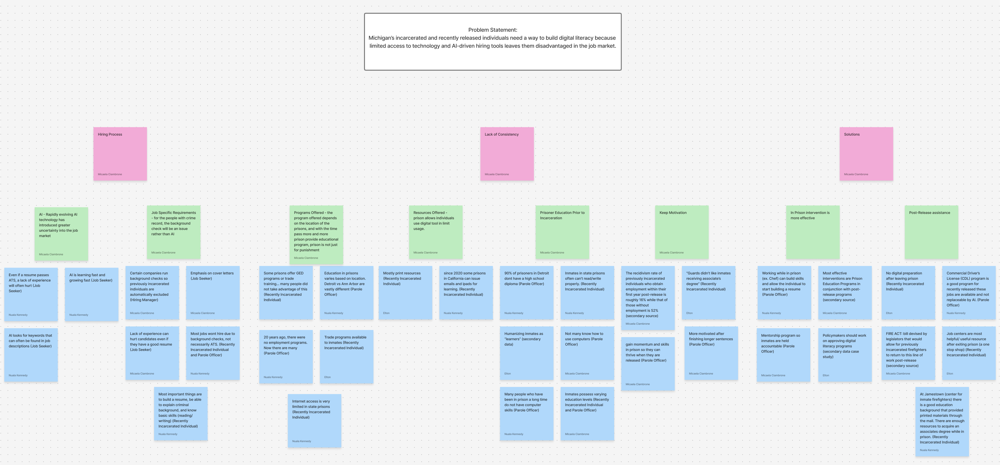
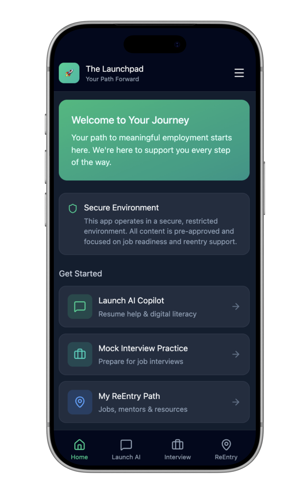
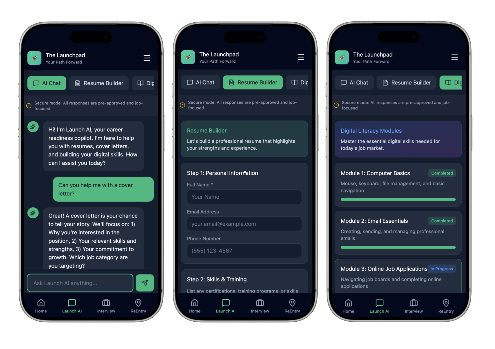
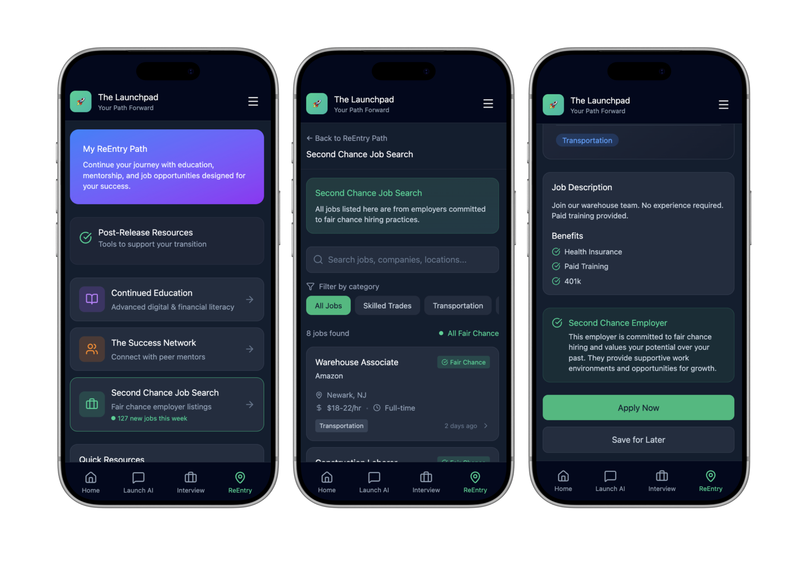

UX Research — [PRODUCT / UX DESIGN]
Launchpad — Improving hiring efforts for recently incarcerated individuals
Launchpad is a UX research-driven project developed early in my graduate studies in collaboration with the Michigan Works! Association. Working on a team of five, we explored challenges within the employment process where AI plays a role, focusing specifically on the experiences of incarcerated and recently released individuals. While the final product is not the most polished artifact in my portfolio, the research process, insights, and problem-framing that shaped Launchpad are what make this project stand out.
About Michigan Works! Association
This statewide organization advances workforce development through policy, education, and collaboration to build stronger communities. By connecting employers, training opportunities, and policymakers, it works to advocate for innovative solutions that better serve both businesses and communities.
The Problem
Framing the problemContextual Research
Employment is strongly correlated with a reduction in recidivism rates among previously incarcerated individuals
-
Recidivism Statistics
- Individuals who obtain employment within the first year post-release: ~16% recidivism rate.
- Individuals without employment post-release: ~52% recidivism rate.
- (US Chamber of Commerce, Melhorn et al., 2024)
-
The AI Challenge
- The increasing use of Artificial Intelligence (AI) in the workforce presents a prohibitive barrier to this reintegration initiative.
-
Economic Opportunity
- Significant job shortage of nearly 1.9 million unfilled positions in industries traditionally occupied by returning citizens.
- Waste Management, Construction, and Accommodation.
- (US Chamber of Commerce, Melhorn et al., 2024)
-
The Two-Fold Issue
- Integrating AI Training: How to incorporate effective AI training into Prison Education Programs (PEPs).
- Mitigating Stigma: How to help individuals navigate job searches while mitigating the bias associated with their previously incarcerated status.
Problem Statement
Michigan's incarcerated and recently released individuals face two key employment challenges:
- Lack essential digital literacy skills due to technological isolation in correctional facilities.
- Further disadvantaged by AI-driven hiring tools that often screen or exclude applicants based on their justice history.
This systemic gap prevents this motivated population from filling available jobs in high-demand sectors, perpetuating the high correlation between unemployment and recidivism.
Approach Methodology
The ProcessSemi-structured Interviews
We began our research by conducting semi-structured stakeholder interviews. Over the course of two weeks, we spoke with six individuals from diverse backgrounds and perspectives to gain a deeper understanding of the challenges surrounding employment, reentry, and the transition back into society.
Our interviewees consisted of:
Once we compiled all of our interview notes, we created an affinity wall of all the key points that came up.

Literature Reviews
Articles discussing recidivism statistics, current prison education programs, and the progress of various resources in improving hiring success.
Thematic Analysis
Revealed key insights by iteratively moving between bottom-up clustering and top-down analysis, facilitated by an Affinity Wall for organization.
Findings & Recommendations
Research ConclusionsKey Findings
-
Inconsistency of Digital Access and Skills
Varying education levels among incarcerated individuals and limited digital resources in prisons.
Prioritize foundational digital literacy modules that are accessible within highly restricted environments.
-
Effectiveness of In-Prison Interventions
In-prison interventions are more effective when they successfully translate work and training completed while incarcerated into viable jobs and opportunities outside upon release.
Focus product features on skills translation, mock interviews, and AI guidance to explicitly bridge in-prison training with external job language.
-
Overcoming Post-Release Employment Barriers
Criminal records create significant employment barriers for returning citizens, despite demonstrated skills and motivation.
Prioritize connecting users with "Second Chance Employers" and providing resources like mentor connections.
Recommendations
Develop app modules based on Prison Education Programs (PEPs) that allow for continuous use both during incarceration and post-release.
-
Mock Interview & Advocacy Practice:
Integrate simulated interviews, including specific practice for professionally discussing a criminal record with HR.
-
Targeted Job Search:
Curate and advertise a list of job roles and employers known to be "Second Chance" friendly.
-
Mentor Connection:
Facilitate secure connections between users and successful, recently incarcerated mentors.
-
Dual-Purpose Digital Literacy:
Provide training accessible in limited prison environments, with expanded modules available after release.
The Pitched Prototype
See it in actionPresenting LaunchPad
LaunchPad represents a critical, two-part intervention addressing the core challenge of reentry: bridging the digital and employment gap for Michigan's justice-impacted community.

A Closer Look
By providing Launch AI within a secure, integrated app, we equip users with the essential digital literacy and customized practice needed to overcome hiring bias and navigate an AI-driven job market.
Prioritizing targeted job listings and mentor connections ensures that the training translates directly into employment, effectively driving down the high rates of recidivism and fostering successful, long-term societal reintegration.


Outcomes
What I'd carry forwardConducting Interviews
Because stakeholder interviews were central to this project, I quickly became familiar with the interview process and protocols. At the beginning of the semester, recruiting participants, obtaining informed consent, conducting interviews, and synthesizing notes were all new experiences. After completing six interviews, I became more confident navigating each stage of the process and adapting my approach based on the needs of each participant.
Ethics in Research
Working directly with participants reinforced the importance of approaching research with empathy, openness, and flexibility. The interviews challenged some of my initial assumptions about the experiences of incarcerated and formerly incarcerated individuals and made me more aware of the biases I brought into the research. Recognizing these biases encouraged me to set aside my preconceived notions and remain open to perspectives that differed from my own.
Ethics in Design
Presenting our work also highlighted the broader ethical considerations of designing for marginalized populations. Audience questions about whether incarcerated individuals deserved or needed this level of support challenged our team to consider the potential impact of our work beyond our intended users. Although the project could not continue into further research at the time, this experience reinforced the importance of considering who may be affected by a design and the broader implications of the solutions we create.
References
Bryant, E. (2022). The challenge of finding a job after prison. Vera Institute of Justice. https://www.vera.org/news/the-challenge-of-finding-a-job-after-prison
Mancino, F. (2025). Rehabilitating futures: Assessing the effects of correctional employment-focused programs on recidivism and employment. Journal of Labor Economics, 43(3), 563–598. https://doi.org/10.1086/732518
Michigan Works! Association. (2025). Our services. https://www.michiganworks.org/our-services
Melhorn, S., Hoover, M., & Lucy, I. (2024, September 18). The Workforce Impact of Second Chance Hiring. U.S. Chamber of Commerce. Retrieved September 6, 2025, from https://www.uschamber.com/workforce/data-deep-dive-the-workforce-impact-of-second-chance-hiring-3
Mingus, W., & Klein, D. (2023). Effectiveness of interventions to improve employment for formerly incarcerated individuals: A systematic review and meta-analysis. International Journal of Offender Therapy and Comparative Criminology, 67(3), 456–478. https://pmc.ncbi.nlm.nih.gov/articles/PMC10010959/
Curious about another project?
View all work